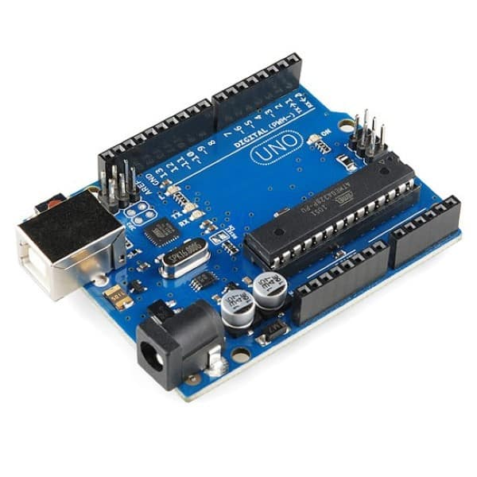

Produtividade
Sensores permitem operação contínua 24/7 sem supervisão humana: a máquina detecta a peça, executa o ciclo e segue para a próxima automaticamente.
/// catálogo técnico — indústria 4.0
Catálogo técnico dos sensores utilizados em projetos de Internet das Coisas e Automação Industrial — conceito, princípio de funcionamento, especificações, tipo de sinal e exemplos práticos de programação com Arduino.
01 — conceito
Sensoriamento é o processo de perceber e medir grandezas do mundo físico — temperatura, luz, pressão, distância, presença, corrente elétrica, vibração — convertendo-as em sinais elétricos que podem ser interpretados por um sistema de controle.
O dispositivo que realiza essa conversão é o sensor, um transdutor que transforma uma grandeza física em uma grandeza elétrica proporcional: tensão, corrente, resistência, frequência ou um quadro de dados digital. Sem sensores, um sistema automatizado é cego: ele executa comandos, mas não sabe o que está acontecendo no processo.
É importante distinguir sensor de transdutor e de atuador. O sensor detecta e mede; o transdutor converte a grandeza de uma forma de energia para outra e normalmente já entrega o sinal condicionado e padronizado (por exemplo, em 4–20 mA); e o atuador faz o caminho inverso, convertendo um sinal elétrico de comando em ação física — girar um motor, abrir uma válvula, acionar um alarme.
Todo sensor é avaliado por características metrológicas que definem sua adequação ao processo: faixa de medição, precisão, resolução, sensibilidade, tempo de resposta, repetibilidade e linearidade. Escolher o sensor errado compromete toda a malha de controle — por isso este catálogo detalha as especificações de cada modelo.
02 — automação industrial
Automatizar é operar processos com o mínimo de intervenção humana — e isso só é possível porque os sensores fornecem, continuamente, a informação de que o controlador precisa para decidir. São eles que sustentam os ganhos da automação:
Sensores permitem operação contínua 24/7 sem supervisão humana: a máquina detecta a peça, executa o ciclo e segue para a próxima automaticamente.
Medição em tempo real de temperatura, peso e dimensão mantém o processo dentro da faixa especificada e reprova o produto fora do padrão ainda na linha.
Sensores de presença, chama, gás e nível protegem pessoas e patrimônio: detectam a condição de risco e desligam o equipamento antes do acidente.
A leitura contínua de vibração, corrente e temperatura revela o desgaste do equipamento antes da falha, substituindo a parada emergencial pela programada.
Medir consumo de água, energia e insumos é o primeiro passo para reduzi-lo: sem sensor não há medição, e sem medição não há como identificar o desperdício.
Sensores RFID e de identificação vinculam cada peça aos dados do seu processo, permitindo reconstruir o histórico completo de produção de um lote.
03 — sensoriamento e controle
O sensor sozinho não controla nada: ele é o primeiro elo de uma cadeia que só se completa quando o dado é transmitido, processado e devolvido ao processo em forma de ação. Esse caminho é sempre o mesmo, do chão de fábrica até a nuvem:
O sensor mede a grandeza física e gera o sinal elétrico correspondente — analógico, digital ou em barramento.
O sinal é amplificado, filtrado e convertido para digital pelo microcontrolador ou pelo módulo de entrada do CLP.
O dado trafega por I2C, SPI e UART dentro do dispositivo, e por Ethernet Industrial, MQTT, OPC UA ou PROFINET pela rede.
O controlador compara o valor medido com o setpoint; a nuvem armazena o histórico e aplica análises e alertas.
A saída aciona o atuador — relé, motor, válvula, alarme — corrigindo o processo e fechando a malha de controle.
Esse ciclo é o que a automação chama de malha fechada (ou closed loop): a saída do processo é medida por um sensor e realimentada na entrada do controlador, que corrige continuamente o desvio em relação ao valor desejado. É assim que um forno mantém a temperatura estável, que um reservatório nunca transborda e que um motor gira exatamente na rotação programada.
Na malha aberta, ao contrário, não existe realimentação: o comando é executado "às cegas", sem verificação do resultado. A diferença entre as duas é justamente o sensor — ele é o elemento que transforma um acionamento em um controle.
Quando esse dado, além de fechar a malha local, é publicado em uma rede e enviado à nuvem, o sistema de automação passa a ser um sistema de Internet das Coisas: o mesmo sinal que aciona um relé alimenta um painel de supervisão, um histórico de produção e algoritmos de manutenção preditiva.
04 — internet das coisas
A Internet das Coisas (IoT — Internet of Things) é o paradigma tecnológico em que objetos físicos — máquinas, sensores, veículos, eletrodomésticos — são equipados com sensores, software e conectividade para coletar e trocar dados pela internet, com pouca ou nenhuma intervenção humana.
Em um sistema IoT, cada "coisa" percebe o ambiente por meio de sensores (temperatura, vibração, presença, corrente elétrica), processa essas informações e as transmite por redes de comunicação a plataformas em nuvem, onde os dados são armazenados, analisados e transformados em decisões e ações — como acionar um atuador, gerar um alerta de manutenção ou otimizar um processo.
No ambiente fabril esse conceito recebe o nome de IIoT (Industrial Internet of Things) e é um dos pilares da Indústria 4.0, ao lado da robótica, da computação em nuvem, do big data e da inteligência artificial. Os sensores deste catálogo são, literalmente, a camada de percepção dessa arquitetura.
05 — plataforma

Conceito — o Arduino é uma plataforma aberta de prototipagem eletrônica composta por uma placa com microcontrolador e um ambiente de programação simplificado. É o elemento que lê os sensores, processa a lógica e aciona os atuadores em um projeto de sensoriamento.
Funcionamento — o programa gravado na placa executa a função
setup() uma única vez, para configurar pinos e bibliotecas, e em seguida
repete indefinidamente a função loop(), onde acontece o ciclo
ler entradas → processar → acionar saídas — o mesmo princípio do ciclo de
varredura de um CLP industrial.
Programação — os sketches são escritos em uma linguagem derivada de
C/C++. Sensores analógicos são lidos com analogRead(), digitais com
digitalRead(), e sensores com protocolo próprio (I2C, SPI, 1-Wire) são
acessados por bibliotecas específicas.
06 — comunicação de dados
A integração entre sensores, CLPs, robôs e plataformas em nuvem depende de protocolos de comunicação padronizados. Estes são os principais utilizados na Indústria 4.0:
Base física das redes de fábrica (EtherNet/IP, EtherCAT). Comunicação determinística e de alta velocidade no chão de fábrica com cabeamento Ethernet padrão.
Protocolo leve de publicação/assinatura criado para IoT. Sensores publicam suas leituras em tópicos de um broker; sistemas em nuvem assinam apenas o que interessa.
Padrão aberto de interoperabilidade da Indústria 4.0. Transporta dados com segurança (criptografia e autenticação) e descreve semanticamente as informações da máquina.
Evolução do Profibus sobre Ethernet, dominante em CLPs Siemens. Comunicação em tempo real entre controladores, sensores, inversores e periferia descentralizada.
07 — catálogo
Clique em um sensor para ver conceito, princípio de funcionamento, especificações técnicas, tipo de sinal, aplicações, exemplo de projeto com Arduino e fabricantes.
[ nenhum sensor encontrado para essa busca ]
08 — robótica industrial
Um robô industrial é, segundo a norma ISO 8373, um "manipulador multipropósito, reprogramável, controlado automaticamente, programável em três ou mais eixos". Ele só consegue se movimentar com precisão porque é, antes de tudo, uma máquina densamente sensoriada.
Encoders em cada junta informam a posição angular ao controlador — o mesmo princípio do KY-040 deste catálogo, porém em versão óptica de alta resolução. Sensores de corrente monitoram o torque dos motores, sensores de proximidade confirmam a presença da peça na garra e sensores de vibração e temperatura alimentam a manutenção preditiva.
A parametrização de um robô — velocidade, aceleração, limites de eixo, tolerância de posicionamento — é feita justamente a partir das leituras desses sensores. Explore o catálogo de robôs industriais para ver as 7 configurações cinemáticas e como cada uma se integra à automação e à IoT.